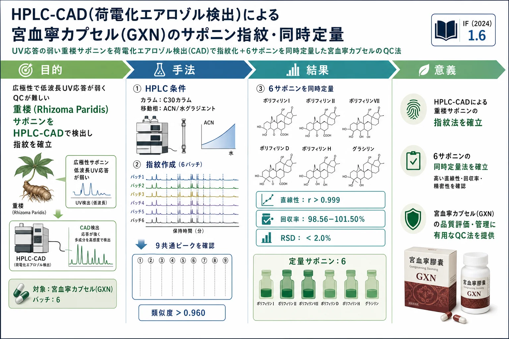

HPLC-CAD(荷電化エアロゾル検出)による宮血寧カプセル(GXN)のサポニン指紋・同時定量

<!-- 方針: ほぼ全訳＋必要に応じた補足。原文構成に沿って訳出。表・数値は保持。「> 補足:」は訳者注。 -->
書誌情報
- 原題: Simultaneous chemical fingerprint and quantitative analysis of saponins in Gongxuening capsule by HPLC-CAD
- 著者: Yang Lou, Yutian Wang, Mengting Lai, Shuyang Li, Mingran Dong, Hongwei Xue, Xi Chen, Juan Lu, Ruiping Chai（中国医学科学院薬用植物研究所／北京協和医学院／Thermo Fisher Scientific 中国, 中国）
- 掲載: Acta Chromatographica 2025, オンライン先行公開 (ACHROM-2025.01389). https://doi.org/10.1556/1326.2025.01389
- インパクトファクター: 1.6（Acta Chromatographica, JCR 2024 / Clarivate。1.55）
- 受理経過: 受領 2025-07-03 / 採録 2025-12-30
補足: GXN = 宮血寧カプセル（Gongxuening capsule。重楼〈Rhizoma Paridis、ツクバネソウ属 Paris〉のステロイドサポニンが主成分。不正子宮出血など婦人科疾患に用いる中成薬)。CAD (Charged Aerosol Detector, 荷電化エアロゾル検出器) = 溶出物を噴霧・帯電させ、粒子の電荷を測る汎用（ユニバーサル)検出器。発色団やUV吸収に依存せず、揮発性の低い成分を質量に概ね比例して検出できるため、UV応答が弱いサポニンの定量に有利。本論文は分析法(QC)開発の研究論文。
要旨（Abstract）
背景: 宮血寧カプセル(GXN)は中国で婦人科疾患治療に常用される中成薬。複雑な化学組成のため現行の検出法は制約が多く不十分。サポニン成分は極性範囲が広く、低波長UV検出で応答が弱く、干渉ピークも多いため、活性成分の正確な定量が難しい。
目的: HPLCと荷電化エアロゾル検出器(CAD) を組み合わせたHPLC-CADでGXNのクロマト指紋を作り、主要成分を定量する。
方法: Acclaim C30 カラム(3 mm × 250 mm, 3 μm)で、アセトニトリル(A)／水(B)のグラジエント（0–5 min 40% A／5–20 min 40→45%／20–35 min 45→50%／35–45 min 50%)、流速 0.4 mL/min、カラム温度 10 ℃、注入量 1 μL。CADはサンプリング5 Hz、フィルタ定数3.6 s、噴霧温度50 ℃。6バッチのGXNで指紋を作り類似度を評価し、主要成分を定量。
結果: GXNのHPLC指紋を確立し、9の共通ピークを同定、6バッチの類似度は0.960超。ポリフィリンI(PPI)・II(PPII)・VII(PPVII)・D(PPD)・H(PPH)・グラシリン(gracillin)の6サポニンは、対応濃度範囲でピーク面積が良好な直線性（相関係数 >0.999)を示し、回収率は 98.56〜101.50%（RSD 2.0%未満)。
結論: 本法は広い適用性・高感度・優れた再現性・高い信頼性を示し、複雑な重楼(Rhizoma Paridis)サポニンを含むGXNの検出・品質管理に適する。
1. 序論（Introduction）
GXNは重楼のサポニンを主成分とし、止血・婦人科疾患に用いられる。重楼のステロイドサポニン（ポリフィリン類)は発色団に乏しく低波長UVで応答が弱いうえ、極性が広範で干渉ピークが多く、UV検出では正確な定量が困難。CADは、成分のUV吸収に依存せず、非揮発性成分を質量に概ね比例して検出できる汎用検出器で、こうしたサポニンの一斉検出・定量に適する。本研究はHPLC-CADでGXNの指紋と主要サポニン定量を確立する。
2. 材料と方法（Materials and Methods）
HPLC-CAD条件
- カラム: Acclaim C30（3 mm × 250 mm, 3 μm）、カラム温度 10 ℃（低温でサポニンの分離を改善)
- 移動相: アセトニトリル(A)／水(B)。グラジエント: 0–5 min 40% A／5–20 min 40→45% A／20–35 min 45→50% A／35–45 min 50% A
- 流速 0.4 mL/min、注入量 1 μL
- CAD: サンプリング周波数 5 Hz、フィルタ定数 3.6 s、噴霧(atomization)温度 50 ℃
試料・定量
6バッチのGXNで指紋を作成。標準品: ポリフィリンI・II・VII・D・H、グラシリンの6サポニンで検量線を作成し定量。
3. 結果（Results）
指紋と類似度
HPLC-CAD指紋で9共通ピークを同定。6バッチの類似度は0.960超で、バッチ間の一貫性が高い。
6サポニンの定量とバリデーション
ポリフィリンI(PPI)・II(PPII)・VII(PPVII)・D(PPD)・H(PPH)・グラシリンの6成分は、対応濃度範囲でピーク面積が良好な直線性（相関係数 >0.999)。回収率 98.56〜101.50%、RSD <2.0% で、確度・再現性が良好。
4. 結論（Conclusion）
HPLC-CADにより、UV応答の弱い重楼サポニンを含むGXNの指紋(9共通ピーク・類似度>0.960)と6サポニンの同時定量法を確立した。本法は広適用性・高感度・優れた再現性・高信頼性を示し、複雑な重楼サポニンを含むGXNの品質管理に適する。
補足（実務的示唆）: 要点は検出器の選択。生薬QCで指紋・定量を組むとき、対象成分に発色団が乏しい（サポニン・糖類・脂質等)と、標準的なUV/DAD検出では応答が弱く・干渉に埋もれて定量できない。ここで CAD（荷電化エアロゾル検出) や ELSD（蒸発光散乱)といった汎用検出器を使うと、UV吸収に依存せず質量ベースで一斉検出できる。CADはELSDより感度・直線性に優れることが多い。実装のコツは、①C30カラム＋低カラム温度(10℃) で広極性サポニンを分離、②CADの噴霧温度・フィルタ定数・サンプリング周波数を最適化、③6サポニン(ポリフィリン類・グラシリン)で検量線を作り回収率98–101%・RSD<2%を確認。UVで“見えない”成分をQC対象にできる点で、本サイト収録の他のサポニン系・多成分定量論文を補完する検出技術の実例として読める。